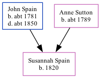

The child of John Spain (a laborer) and Anne SuttonSusannah Spain, the three times great-aunt of Nigel Horne, was born in Stourmouth, Kent, England in 18201,2,3 and baptized there on Mar 19, 1823.
Throughout her life, Susannah lived in several places: in East Malling, Kent, England in 18511; in West Malling, Kent, England in 18612; and in Stoke, Kent, England in 18713.
1851 England Census Online publication - Provo, UT, USA: The Generations Network, Inc., 2005.Original data - Census Returns of England and Wales, 1851. Kew, Surrey, England: The National Archives of the UK (TNA): Public Record Office (PRO), 1851. Data imaged from the National
1861 England Census Online publication - Provo, UT, USA: The Generations Network, Inc., 2005.Original data - Census Returns of England and Wales, 1861. Kew, Surrey, England: The National Archives of the UK (TNA): Public Record Office (PRO), 1861. Data imaged from the National
1871 England Census Online publication - Provo, UT, USA: The Generations Network, Inc., 2004.Original data - Census Returns of England and Wales, 1871. Kew, Surrey, England: The National Archives of the UK (TNA): Public Record Office (PRO), 1871. Data imaged from the National
Family Tree

Map
Generated by ged2site. Last updated on Feb 28, 2025